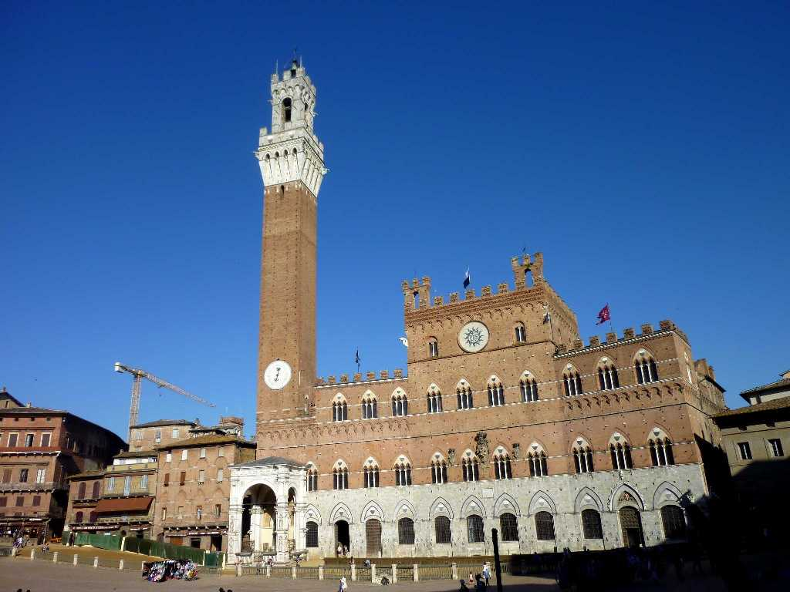
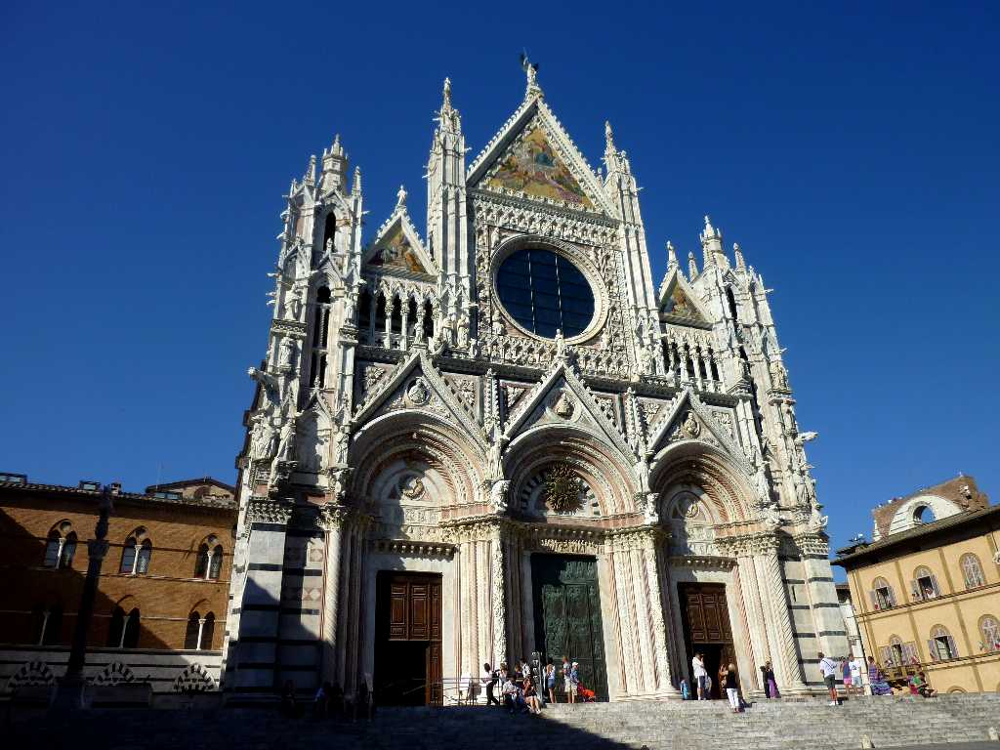

Piazza del Campo Siena
カンポ広場は中世の広場としてはヨーロッパ最大の広場で年２回競馬が開催される シエナは金融都市として栄え１４７２年開業の現在営業している最古の銀行 Monte dei Paschi di Siena が有る

Duomo Siena
１３世紀に創られたシエナ大聖堂はイタリアで最も美しいゴシック様式のファサードを持つ聖堂で建物全体はロマネスク様式となっている